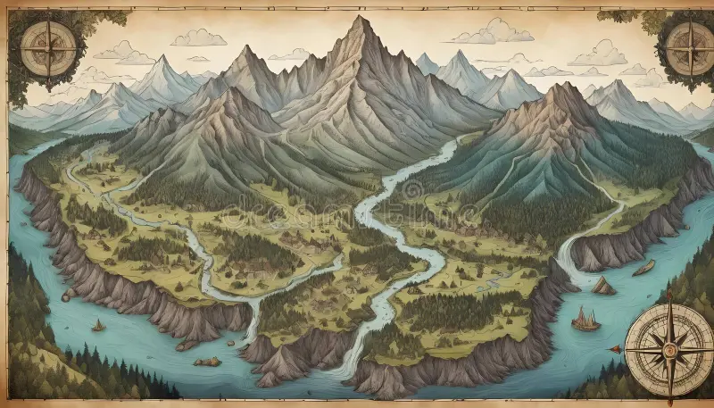
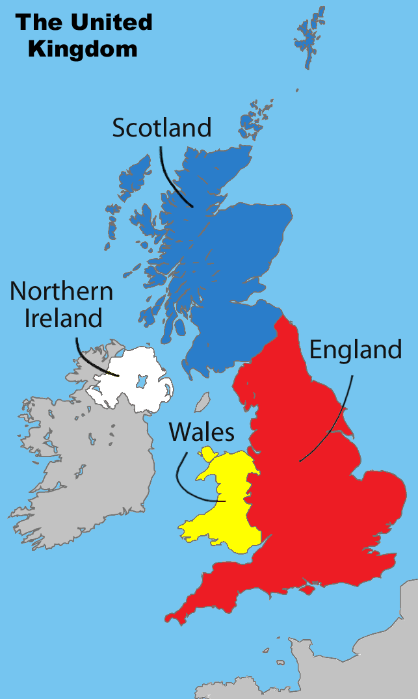
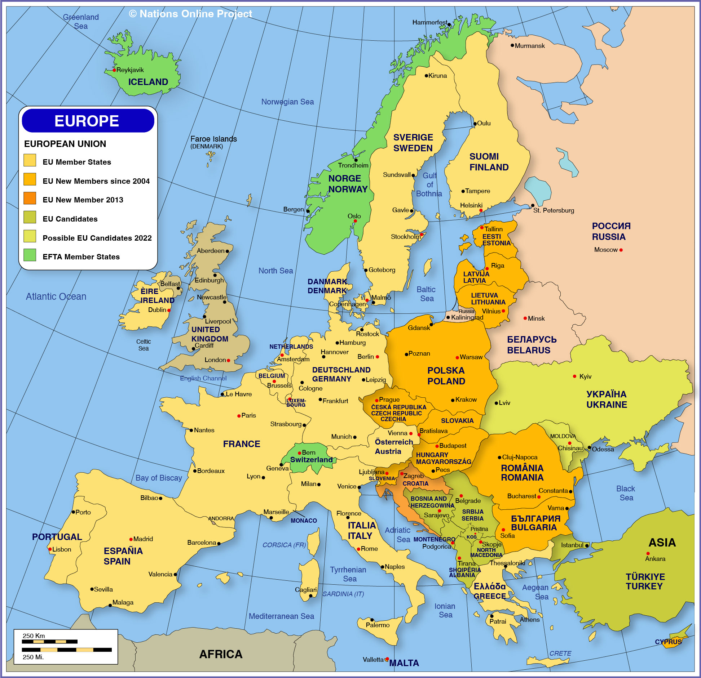
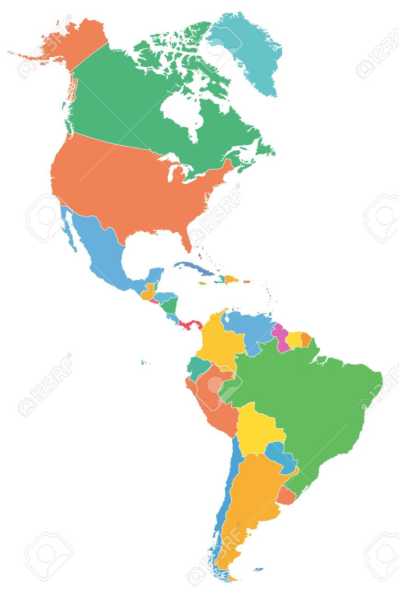
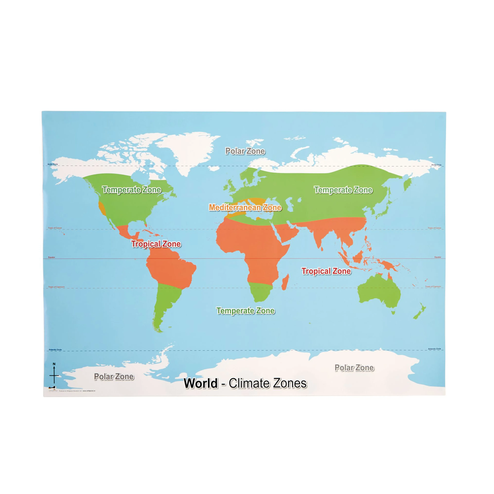

Rivers
The journey of fresh water from a mountain spring to the open sea.

Rivers — A Journey from Source to Sea
Six lessons on what a river is, how it shapes the upper, middle and lower course, our local rivers, and the great rivers of the world (Nile, Amazon, Yangtze, Mississippi).
Open the Rivers guidebook →UK Regions & Counties
The United Kingdom is four countries in one: England, Scotland, Wales and Northern Ireland.
The capital cities are:
- England — London
- Scotland — Edinburgh
- Wales — Cardiff
- Northern Ireland — Belfast
England is split into counties — areas with their own history and character. Nearby ones include Buckinghamshire, Hertfordshire, Bedfordshire, Oxfordshire, Berkshire, Surrey and Sussex.
The UK has beautiful physical features:
- Highest mountain: Ben Nevis in Scotland (1,345 m).
- Longest river: the River Severn (220 miles).
- Largest lake: Lough Neagh in Northern Ireland.
- National parks: the Lake District, Snowdonia, the Peak District, Dartmoor, and more.

Countries of Europe
Europe has around 44 countries — from tiny Vatican City to vast Russia.
A continent is one of seven huge regions of the Earth. Europe is the second-smallest continent but home to many of the countries that British families travel to.
Some capitals every Year 4 learner should know:
- France — Paris
- Spain — Madrid
- Italy — Rome
- Germany — Berlin
- Netherlands — Amsterdam
- Greece — Athens
- Portugal — Lisbon
- Ireland — Dublin
Europe has two big mountain ranges — the Alps in the south and the Pyrenees between France and Spain. Big rivers include the Rhine, the Danube, and the Volga.

The Americas
Two giant continents joined by a narrow bridge of land.
The Americas are made up of North America and South America, connected by a narrow strip of land called Central America.
Big countries and capitals:
- USA — Washington, D.C.
- Canada — Ottawa
- Mexico — Mexico City
- Brazil — Brasília
- Argentina — Buenos Aires
- Peru — Lima
Landmarks to spot on a map:
- The Rocky Mountains and the Andes (longest mountain range in the world).
- The Amazon Rainforest in Brazil and Peru.
- The Great Lakes between the USA and Canada.
- The Mississippi River in the USA.

Climate Zones & Biomes
The world has different climates depending on how close to the Equator you are.
A climate is the weather a place usually has over many years. A biome is a huge region with the same kind of plants and animals.
The big biomes are:
- Tropical rainforest — hot, wet, full of life (Amazon, Congo).
- Hot desert — very hot in the day, dry, few plants (Sahara).
- Temperate forest — four seasons, lots of trees (most of the UK).
- Savanna (grassland) — warm, dry, grass and scattered trees (Africa).
- Tundra — very cold, frozen ground, few plants (northern Canada, Siberia).
- Polar — icy all year (Arctic, Antarctica).
The closer you are to the Equator, the hotter it tends to be. The closer to the North Pole or South Pole, the colder.

Map Skills
How to read a map so it always tells you where you are.
Every map has the compass points: North, South, East and West. “Never Eat Shredded Wheat” helps you remember them clockwise!
A key (or legend) tells you what the symbols mean. A little tree picture might mean a wood. Blue squiggly lines mean rivers. A red square might mean a post office.
The scale tells you how real-world distance fits onto the map. A scale of “1 cm = 1 km” means every centimetre on the map stands for one kilometre outside.
Grid references are a pair of numbers that pinpoint a place. Read the bottom number first (how far across), then the side number (how far up). Your teachers might call this “along the corridor, up the stairs”.
Test Yourself!
Ten geography questions from the whole syllabus. Order is different every time you reload.